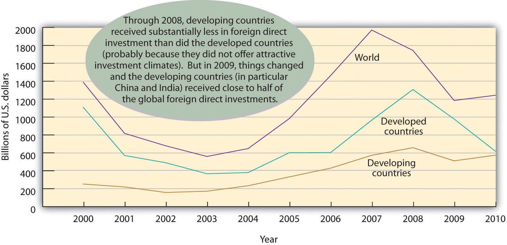
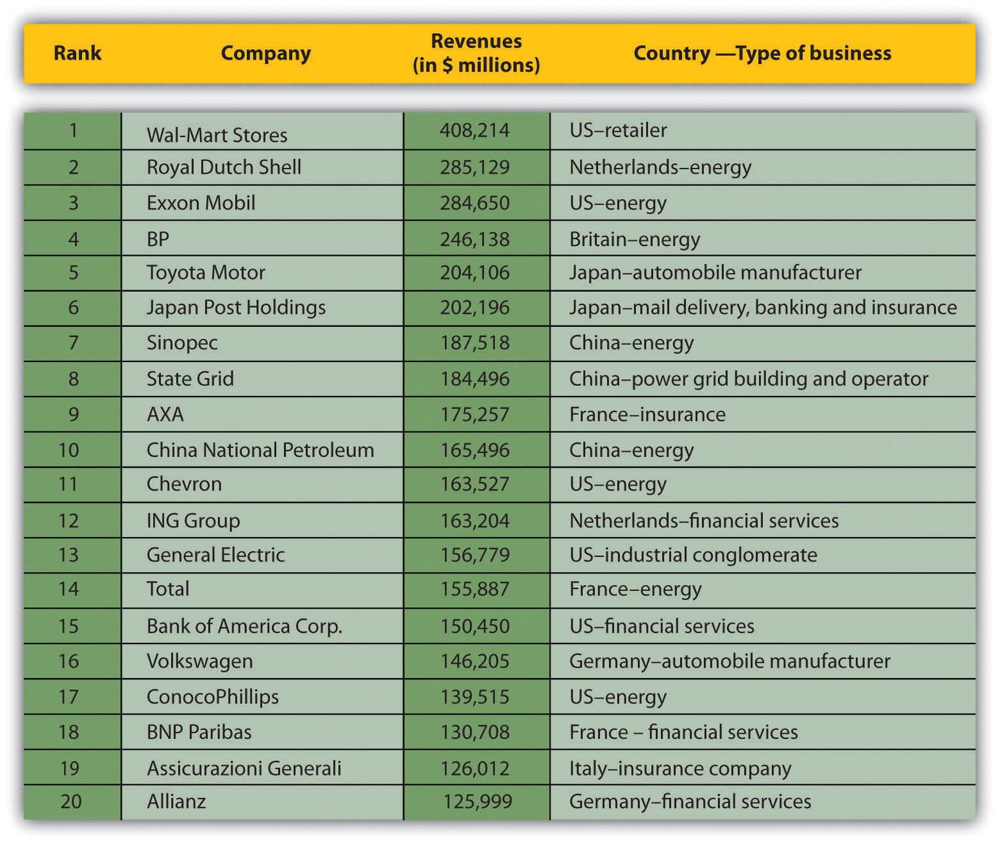

The fact that nations exchange billions of dollars in goods and services each year demonstrates that international trade makes good economic sense. For an American company wishing to expand beyond national borders, there are a variety of ways it can get involved in international business. Let’s take a closer look at the more popular ones.
ImportingPractice of buying products overseas and reselling them in one’s own country. (buying products overseas and reselling them in one’s own country) and exportingPractice of selling domestic products to foreign customers. (selling domestic products to foreign customers) are the oldest and most prevalent forms of international trade. For many companies, importing is the primary link to the global market. American food and beverage wholesalers, for instance, import the bottled water Evian from its source in the French Alps for resale in U.S. supermarkets.Fine Waters Media, “Bottled Water of France,” http://www.finewaters.com/Bottled_Water/France/Evian.asp (accessed May 25, 2006). Other companies get into the global arena by identifying an international market for their products and become exporters. The Chinese, for instance, are increasingly fond of fast foods cooked in soybean oil. Because they also have an increasing appetite for meat, they need high-protein soybeans to raise livestock.H. Frederick Gale, “China’s Growing Affluence: How Food Markets Are Responding” (U.S. Department of Agriculture, June 2003), http://www.ers.usda.gov/Amberwaves/June03/Features/ChinasGrowingAffluence.htm (accessed May 25, 2006). As a result, American farmers now export over $9 billion worth of soybeans to China every year.American Soybean Association, “ASA Testifies on Importance of China Market to U.S. Soybean Exports,” June 22, 2010, http://www.soygrowers.com/newsroom/releases/2010_releases/r062210.htm (accessed August 21, 2011).
A company that wants to get into an international market quickly while taking only limited financial and legal risks might consider licensing agreements with foreign companies. An international licensing agreementAgreement that allows a foreign company to sell a domestic company’s products or use its intellectual property in exchange for royalty fees. allows a foreign company (the licensee) to sell the products of a producer (the licensor) or to use its intellectual property (such as patents, trademarks, copyrights) in exchange for royalty fees. Here’s how it works: You own a company in the United States that sells coffee-flavored popcorn. You’re sure that your product would be a big hit in Japan, but you don’t have the resources to set up a factory or sales office in that country. You can’t make the popcorn here and ship it to Japan because it would get stale. So you enter into a licensing agreement with a Japanese company that allows your licensee to manufacture coffee-flavored popcorn using your special process and to sell it in Japan under your brand name. In exchange, the Japanese licensee would pay you a royalty fee.
Another popular way to expand overseas is to sell franchises. Under an international franchiseAgreement in which a domestic company (franchiser) gives a foreign company (franchisee) the right to use its brand and sell its products. agreement, a company (the franchiser) grants a foreign company (the franchisee) the right to use its brand name and to sell its products or services. The franchisee is responsible for all operations but agrees to operate according to a business model established by the franchiser. In turn, the franchiser usually provides advertising, training, and new-product assistance. Franchising is a natural form of global expansion for companies that operate domestically according to a franchise model, including restaurant chains, such as McDonald’s and Kentucky Fried Chicken, and hotel chains, such as Holiday Inn and Best Western.
Because of high domestic labor costs, many U.S. companies manufacture their products in countries where labor costs are lower. This arrangement is called international contract manufacturingPractice by which a company produces goods through an independent contractor in a foreign country. or outsourcingPractice of using outside vendors to manufacture all or part of a company’s actual products.. A U.S. company might contract with a local company in a foreign country to manufacture one of its products. It will, however, retain control of product design and development and put its own label on the finished product. Contract manufacturing is quite common in the U.S. apparel business, with most American brands being made in a number of Asian countries, including China, Vietnam, Indonesia, and India.Gary Gereffi and Stacey Frederick, “The Global Apparel Value Chain, Trade and the Crisis: Challenges and Opportunities for Developing Countries,” The World Bank, Development Research Group, Trade and Integration Team, April 2010, http://www.iadb.org/intal/intalcdi/PE/2010/05413.pdf (accessed August 21, 2011).
Thanks to twenty-first-century information technology, nonmanufacturing functions can also be outsourced to nations with lower labor costs. U.S. companies increasingly draw on a vast supply of relatively inexpensive skilled labor to perform various business services, such as software development, accounting, and claims processing. For years, American insurance companies have processed much of their claims-related paperwork in Ireland. With a large, well-educated population with English language skills, India has become a center for software development and customer-call centers for American companies. In the case of India, as you can see in Table 3.1 "Selected Hourly Wages, United States and India", the attraction is not only a large pool of knowledge workers but also significantly lower wages.
Table 3.1 Selected Hourly Wages, United States and India
| Occupation | U.S. Wage per Hour (per year) | Indian Wage per Hour (per year) |
|---|---|---|
| Middle-level manager | $29.40 per hour ($60,000 per year) | $6.30 per hour ($13,000 per year) |
| Information technology specialist | $35.10 per hour ($72,000 per year) | $7.50 per hour ($15,000 per year) |
| Manual worker | $13.00 per hour ($27,000 per year) | $2.20 per hour ($5,000 per year) |
Source: Data obtained from “Huge Wage Gaps for the Same Work Between Countries – June 2011,” WageIndicator.com, http://www.wageindicator.org/main/WageIndicatorgazette/wageindicator-news/huge-wage-gaps-for-the-same-work-between-countries-June-2011 (accessed September 20, 2011).
What if a company wants to do business in a foreign country but lacks the expertise or resources? Or what if the target nation’s government doesn’t allow foreign companies to operate within its borders unless it has a local partner? In these cases, a firm might enter into a strategic alliance with a local company or even with the government itself. A strategic allianceAgreement between two companies (or a company and a nation) to pool resources in order to achieve business goals that benefit both partners. is an agreement between two companies (or a company and a nation) to pool resources in order to achieve business goals that benefit both partners. For example, Viacom (a leading global media company) has a strategic alliance with Beijing Television to produce Chinese-language music and entertainment programming.Viacom International, “Viacom Announces a Strategic Alliance for Chinese Content Production with Beijing Television (BTV),” October 16, 2004, http://www.viacom.com/press.tin?ixPressRelease=80454169.
An alliance can serve a number of purposes:
Alliances range in scope from informal cooperative agreements to joint venturesAlliances in which the partners fund a separate entity (partnership or corporation) to manage their joint operations.—alliances in which the partners fund a separate entity (perhaps a partnership or a corporation) to manage their joint operation. Magazine publisher Hearst, for example, has joint ventures with companies in several countries. So, young women in Israel can read Cosmo Israel in Hebrew, and Russian women can pick up a Russian-language version of Cosmo that meets their needs. The U.S. edition serves as a starting point to which nationally appropriate material is added in each different nation. This approach allows Hearst to sell the magazine in more than fifty countries.Liz Borod, “DA! To the Good Life,” Folio, September 1, 2004, http://www.keepmedia.com/pubs/Folio/2004/09/01/574543?ba=m&bi=1&bp=7 (accessed May 25, 2006); Jill Garbi, “Cosmo Girl Goes to Israel,” Folio, November 1, 2003, http://www.keepmedia.com/pubs/Folio/2003/11/01/293597?ba=m&bi=0&bp=7 (accessed May 25, 2006); Liz Borod, “A Passage to India,” Folio, August 1, 2004, http://www.keepmedia.com/pubs/Forbes/2000/10/30/1017010?ba=a&bi=1&bp=7 (accessed May 25, 2006); Jill Garbi, “A Sleeping Media Giant?” Folio, January 1, 2004, http://www.keepmedia.com/pubs/Folio/2004/01/01/340826?ba=m&bi=0&bp=7 (accessed May 25, 2006).
Many of the approaches to global expansion that we’ve discussed so far allow companies to participate in international markets without investing in foreign plants and facilities. As markets expand, however, a firm might decide to enhance its competitive advantage by making a direct investment in operations conducted in another country. Foreign direct investment (FDI)Formal establishment of business operations (such as the building of factories or sales offices) on foreign soil. refers to the formal establishment of business operations on foreign soil—the building of factories, sales offices, and distribution networks to serve local markets in a nation other than the company’s home country. On the other hand offshoringSetting up facilities in a foreign country that replace U.S. manufacturing facilities to produce goods that will be sent back to the United States for sale. occurs when the facilities set up in the foreign country replace U.S. manufacturing facilities and are used to produce goods that will be sent back to the United States for sale. Shifting production to low-wage countries is often criticized as it results in the loss of jobs for U.S. workers.Michael Mandel, “The Real Cost of Offshoring,” Bloomberg BusinessWeek, June 28, 2007, http://www.businessweek.com/magazine/content/07_25/b4039001.htm, (accessed August 21, 2011).
FDI is generally the most expensive commitment that a firm can make to an overseas market, and it’s typically driven by the size and attractiveness of the target market. For example, German and Japanese automakers, such as BMW, Mercedes, Toyota, and Honda, have made serious commitments to the U.S. market: most of the cars and trucks that they build in plants in the South and Midwest are destined for sale in the United States.
A common form of FDI is the foreign subsidiaryIndependent company owned by a foreign firm (called its parent).: an independent company owned by a foreign firm (called the parent). This approach to going international not only gives the parent company full access to local markets but also exempts it from any laws or regulations that may hamper the activities of foreign firms. The parent company has tight control over the operations of a subsidiary, but while senior managers from the parent company often oversee operations, many managers and employees are citizens of the host country. Not surprisingly, most very large firms have foreign subsidiaries. IBM and Coca-Cola, for example, have both had success in the Japanese market through their foreign subsidiaries (IBM-Japan and Coca-Cola–Japan). FDI goes in the other direction, too, and many companies operating in the United States are in fact subsidiaries of foreign firms. Gerber Products, for example, is a subsidiary of the Swiss company Novartis, while Stop & Shop and Giant Food Stores belong to the Dutch company Royal Ahold.
Where does most FDI capital end up? Figure 3.6 "Where FDI Goes" provides an overview of amounts, destinations (developed or developing countries), and trends.
Figure 3.6 Where FDI Goes
All these strategies have been successful in the arena of global business. But success in international business involves more than merely finding the best way to reach international markets. Doing global business is a complex, risky endeavor. As many companies have learned the hard way, people and organizations don’t do things the same way abroad as they do at home. What differences make global business so tricky? That’s the question that we’ll turn to next.
A company that operates in many countries is called a multinational corporation (MNC)Large corporation that operates in many countries.. Fortune magazine’s roster of the top five hundred MNCs in the world speaks for the growth of non-U.S. businesses. Only two of the top ten multinational companies are headquartered in the United States: Wal-Mart (number 1) and Exxon (number 3). Four others are in the second tier (tenth through twentieth): Chevron, General Electric, Bank of America, and ConocoPhillips. The remaining fourteen are non-U.S. firms. Interestingly, of the twenty top companies, nine are energy suppliers, and seven are insurance or financial service firms. Figure 3.7 "The World’s Twenty Largest MNCs" provides a list of these twenty largest MNC’s according to revenues.
Figure 3.7 The World’s Twenty Largest MNCs“Global 500,” Fortune (CNNMoney), http://money.cnn.com/magazines/fortune/global500/2010/full_list/ (accessed August 21, 2011).
MNCs often adopt the approach encapsulated in the motto “Think globally, act locally.” They often adjust their operations, products, marketing, and distribution to mesh with the environments of the countries in which they operate. Because they understand that a “one-size-fits-all” mentality doesn’t make good business sense when they’re trying to sell products in different markets, they’re willing to accommodate cultural and economic differences. Increasingly, MNCs supplement their mainstream product line with products designed for local markets. Coca-Cola, for example, produces coffee and citrus-juice drinks developed specifically for the Japanese market.James C. Morgan and J. Jeffrey Morgan, Cracking the Japanese Market (New York: Free Press, 1991), 102. When such companies as Nokia and Motorola design cell phones, they’re often geared to local tastes in color, size, and other features. For example, Nokia introduced a cell phone for the rural Indian consumer that has a dust-resistant keypad, antislip grip, and a built-in flashlight.“Glocalization Examples—Think Globally and Act Locally,” CaseStudyInc.com, http://www.casestudyinc.com/glocalization-examples-think-globally-and-act-locally (accessed August 21, 2011). McDonald’s provides a vegetarian menu in India, where religious convictions affect the demand for beef and pork.McDonald’s India, “Respect for Local Culture,” http://www.mcdonaldsindia.com/loccul.htm (accessed May 25, 2006). In Germany, McDonald’s caters to local tastes by offering beer in some restaurants.McDonald’s Corp., “A Taste of McDonald’s Around the World,” media.mcdonalds.com, http://www.media.mcdonalds.com/secured/products/international (accessed May 25, 2006). It offers a Maharaja Mac in India, a McItaly Burger in Italy, and a Teriyaki McBurger with Seaweed Shaker Fries in Japan.“Glocalization Examples—Think Globally and Act Locally,” CaseStudyInc.com, http://www.casestudyinc.com/glocalization-examples-think-globally-and-act-locally (accessed August 21, 2011).
Likewise, many MNCs have made themselves more sensitive to local market conditions by decentralizing their decision making. While corporate headquarters still maintain a fair amount of control, home-country managers keep a suitable distance by relying on modern telecommunications. Today, fewer managers are dispatched from headquarters; MNCs depend instead on local talent. Not only does decentralized organization speed up and improve decision making, but it also allows an MNC to project the image of a local company. IBM, for instance, has been quite successful in the Japanese market because local customers and suppliers perceive it as a Japanese company. Crucial to this perception is the fact that the vast majority of IBM’s Tokyo employees, including top leadership, are Japanese nationals.James C. Morgan and J. Jeffrey Morgan, Cracking the Japanese Market (New York: Free Press, 1991), 117.
The global reach of MNCs is a source of criticism, as well as praise. Critics argue that they often destroy the livelihoods of home-country workers by moving jobs to developing countries where workers are willing to labor under poor conditions and for less pay. They also contend that traditional lifestyles and values are being weakened, and even destroyed, as global brands foster a global culture of American movies; fast food; and cheap, mass-produced consumer products. Still others claim that the demand of MNCs for constant economic growth and cheaper access to natural resources do irreversible damage to the physical environment. All these negative consequences, critics maintain, stem from the abuses of international trade—from the policy of placing profits above people, on a global scale. These views surfaced in violent street demonstrations in Seattle in 1999 and Genoa, Italy, in 2000, and since then, meetings of the International Monetary Fund and World Bank have regularly been assailed by large crowds of protestors who have succeeded in catching the attention of the worldwide media.
Meanwhile, supporters of MNCs respond that huge corporations deliver better, cheaper products for customers everywhere; create jobs; and raise the standard of living in developing countries. They also argue that globalization increases cross-cultural understanding. Anne O. Kruger, first deputy managing director of the IMF, says the following:
“The impact of the faster growth on living standards has been phenomenal. We have observed the increased well being of a larger percentage of the world’s population by a greater increment than ever before in history. Growing incomes give people the ability to spend on things other than basic food and shelter, in particular on things such as education and health. This ability, combined with the sharing among nations of medical and scientific advances, has transformed life in many parts of the developing world. Infant mortality has declined from 180 per 1,000 births in 1950 to 60 per 1,000 births. Literacy rates have risen from an average of 40 percent in the 1950s to over 70 percent today. World poverty has declined, despite still-high population growth in the developing world.””Anne O. Krueger, “Supporting Globalization” (remarks, 2002 Eisenhower National Security Conference on “National Security for the 21st Century: Anticipating Challenges, Seizing Opportunities, Building Capabilities,” September 26, 2002), http://www.imf.org/external/np/speeches/2002/092602a.htm (accessed May 25, 2006).
(AACSB) Analysis
You own a company that employs about two hundred people in Maine to produce hockey sticks. Why might you decide to outsource your production to Indonesia? Would closing your plant and moving your operations overseas help or hurt the U.S. economy? Who would be hurt? Who would be helped? Now, armed with answers to these questions, ask yourself whether you would indeed move your facilities or continue making hockey sticks in Maine. Explain your decision.